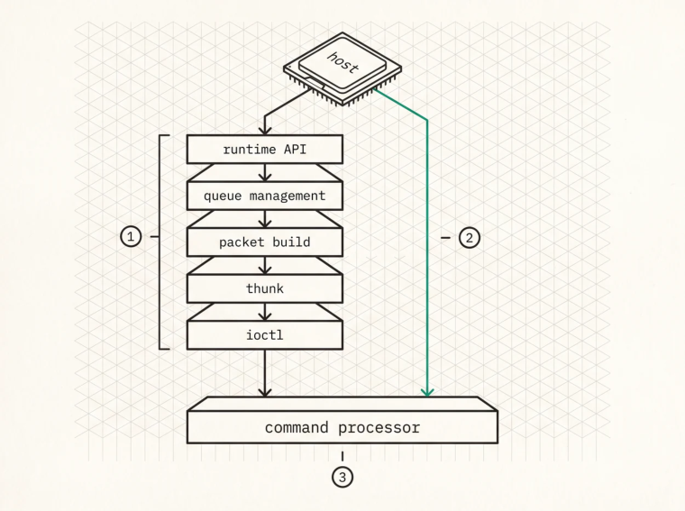

The Driver Interface
What a GPU runtime does
To understand what a from-scratch stack replaces, look at what a runtime actually provides. ROCm and CUDA are small operating systems for the GPU, and they handle device management (discovery, handles, contexts, device loss and recovery), memory management (allocation, virtual address spaces, host and device mapping, peer access, migration), queue management (creation, scheduling, priorities, error handling), code loading, synchronisation through signals and events and fences, and error handling for illegal accesses and page faults and hung contexts.
All of that is necessary in general. For inference decode most of it is either unused or radically simplifiable, because you have one model in one process on a fixed set of devices, a kernel set loaded once at startup, one or two queues per device, and a dispatch-and-poll synchronisation model. You’re not recovering from faults either, you’re preventing them and failing loudly when prevention doesn’t work.
Where the overhead lives
The overhead isn’t in any single component, it’s in the layers of indirection between your code and the hardware. A HIP or CUDA kernel launch traverses the runtime API call, the runtime’s queue management with its locks and state validation, lower-level packet construction, the thunk layer, the kernel ioctl, and finally the GPU command processor. Six steps.
A from-scratch stack goes from the first to the last in one hop, a function that writes a packet into a ring buffer and rings a doorbell, and everything between disappears.

1A kernel launch on a vendor runtime descends through the runtime API, queue management with its locks and state validation, packet construction, the thunk layer, and finally the kernel ioctl.2A from-scratch stack writes the packet and rings the doorbell itself, so the same work arrives in one hop.3Whether that matters depends entirely on the operation. For a small all-reduce the launch machinery is a large fraction of the total, and for a large prefill GEMM it is noise.
How much that’s worth depends entirely on the operation. For small latency-sensitive work, the allreduce in tensor-parallel decode or a tiny elementwise kernel, the launch machinery is a large fraction of the total. For a big prefill GEMM it’s noise. Any claim of the form “removing the runtime makes things N× faster” that doesn’t name the operation and the size isn’t a claim worth evaluating.
Going below the runtime
On AMD the interface is /dev/kfd , the compute device file exposed by the amdkfd kernel driver, and its ioctl interface provides device topology alongside sysfs, VM acquisition, memory allocation and mapping, queue creation, and event handling. Code object loading isn’t provided, so you parse the ELF and place the segments yourself, which is Appendix C.
On NVIDIA the equivalent is the CUDA driver API over /dev/nvidia* , and the structural difference matters more than it might appear. AMD’s KFD is a kernel ioctl interface any language can call directly, while NVIDIA’s driver API is a userspace C library wrapping an undocumented kernel interface, so “below the runtime” is a much shorter drop on AMD. That single fact is the biggest reason a project like the one in this book targets AMD hardware.
Hand-encoding ioctls in Rust
The ioctl request number encodes direction, type, command number, and argument size, exactly as <asm-generic/ioctl.h> does, and in Rust those become const fn s so the request numbers are compile-time constants.
const IOC_NRBITS: u32 = 8;
const IOC_TYPEBITS: u32 = 8;
const IOC_SIZEBITS: u32 = 14;
const IOC_NRSHIFT: u32 = 0;
const IOC_TYPESHIFT: u32 = IOC_NRSHIFT + IOC_NRBITS;
const IOC_SIZESHIFT: u32 = IOC_TYPESHIFT + IOC_TYPEBITS;
const IOC_DIRSHIFT: u32 = IOC_SIZESHIFT + IOC_SIZEBITS;
const IOC_WRITE: u32 = 1;
const IOC_READ: u32 = 2;
const fn ioc(dir: u32, typ: u32, nr: u32, size: usize) -> u32 {
(dir << IOC_DIRSHIFT)
| (typ << IOC_TYPESHIFT)
| (nr << IOC_NRSHIFT)
| ((size as u32) << IOC_SIZESHIFT)
}
/// 'K' — AMDKFD_IOCTL_BASE
const KFD_IOCTL_BASE: u32 = b'K' as u32;
const fn iowr<T>(nr: u32) -> u32 {
ioc(IOC_READ | IOC_WRITE, KFD_IOCTL_BASE, nr,
core::mem::size_of::<T>())
}The argument struct has to mirror the kernel’s exactly. For allocation that’s struct kfd_ioctl_alloc_memory_of_gpu_args .
#[repr(C)]
#[derive(Debug, Default, Clone, Copy)]
pub struct AllocMemoryOfGpuArgs {
pub va_addr: u64, // to KFD
pub size: u64, // to KFD
pub handle: u64, // from KFD
pub mmap_offset: u64, // in: userptr; out: mmap offset
pub gpu_id: u32, // to KFD
pub flags: u32,
}
/// AMDKFD_IOC_ALLOC_MEMORY_OF_GPU = AMDKFD_IOWR(0x16, ...)
pub fn ioc_alloc_memory_of_gpu() -> libc::c_ulong {
iowr::<AllocMemoryOfGpuArgs>(0x16) as libc::c_ulong
}
pub unsafe fn alloc(fd: RawFd, args: &mut AllocMemoryOfGpuArgs) -> i32 {
// Explicit block: `unsafe fn` no longer carries an implicit unsafe body.
unsafe { libc::ioctl(fd, ioc_alloc_memory_of_gpu(), args as *mut _) }
}Every specific in there is the kind of detail that ruins a day if you get it wrong. The magic byte is 'K' and not some other letter, the command number for allocation is 0x16 , and the struct has six fields rather than three.
It would be comforting to think the encoded size protects you here, and it doesn’t. amdkfd dispatches on the command number alone and then substitutes its own request word, zero-filling a short argument
struct and ignoring the tail of an over-long one, deliberately, so that structs can grow trailing fields without breaking old binaries. Hand it a three-field allocation struct and the call succeeds with gpu_id and flags silently reading as zero, which allocates against the wrong device with no flags set. There is no clean error to catch. The only thing standing between you and that is your own size_of assertion and a careful read of the header.
#[repr(C)] is non-negotiable, because Rust’s default layout may reorder fields and without it the ioctl writes the right bytes to the wrong offsets, the class of bug that works on one compiler version and breaks on the next.
So why hand-write these rather than generate them with bindgen ? Three reasons. You can diff every struct against the kernel header. Every field, flag, and offset is visible in your own source. And your build doesn’t depend on kernel headers being present and matching.
The usual counter-argument, that the UAPI is stable so generated bindings are fine, deserves a precise answer rather than a slogan. The kernel UAPI is backward-compatible rather than frozen , meaning existing ioctl numbers and struct layouts don’t change meaning, while new ioctls and new flag bits get added regularly and some structs gain trailing fields under new command numbers. What that buys you is that code written against today’s header keeps working. What it doesn’t buy you is any guarantee that today’s header describes everything the driver can do. Pin the version you validated against, assert your size_of values in a test, and read the changelog when you move kernels.
Topology enumeration
Before you allocate anything you have to find the hardware, and on AMD that means reading sysfs under /sys/class/kfd/kfd/topology/nodes/ , where each node directory describes a CPU or GPU with its name, memory banks, caches, and io_links to other nodes.
One detail here causes more first-day confusion than anything else in the KFD ABI. The node directory index is not the gpu_id . Node directories are numbered in topology order and include CPU nodes, while the gpu_id is a separate identifier, read from the node’s own gpu_id file rather than from its properties , and it’s the value every ioctl expects. Pass a node index where a gpu_id belongs and you get an operation that either fails obscurely or, worse, quietly targets a different device.
Topology tells you how many GPUs you have, how much memory each carries, which links exist between them and at what bandwidth, and which peers are directly connected, which is everything you need to plan memory placement, parallelism strategy, and collective algorithms.
The order of operations
Here’s the sequence that actually gets you to a running kernel, and every step depends on the one before it.
Open
/dev/kfdand query the driver version.Read sysfs topology and map node directories to
gpu_ids.Open the amdgpu render node for each GPU ,
/dev/dri/renderD<N>, and keep the fd open for as long as you want the device. This step is easy to miss because nothing in the KFD name suggests it, and the next step requires it.Acquire the process VM for each GPU through
ACQUIRE_VM, which takes that render-node fd alongside thegpu_id, because the address space it binds to your process is the render node’s GPU VM rather than something KFD invents. Close the fd and the mapping goes with it. Skip this step entirely and you get confusing failures much later, where allocations succeed but mapping fails, or queues create but never execute.Allocate memory with
ALLOC_MEMORY_OF_GPUand map it withMAP_MEMORY_TO_GPU. Allocation and mapping are separate operations, and a buffer that’s allocated but not mapped into a GPU’s address space is invisible to that GPU.Allocate and map the queue’s ring buffer, the read and write pointer pages, and any event page.
Create the queue with
CREATE_QUEUEusing the AQL queue type.Map the doorbell , which exists only now.
CREATE_QUEUEreturns adoorbell_offset, and that is an mmap offset on the/dev/kfdfd rather than a device allocation you made earlier.mmapit and your queue’s doorbell is a word inside that mapping. There is nothing to allocate here and nothing to map to the GPU.Load the code object, placing segments in mapped device memory.
Write a packet, publish its header, ring the doorbell, wait for the completion signal.
When going below the runtime is worth it
It’s worth it when launch overhead is a serious fraction of useful work, and a 20 µs all-reduce carrying 6 µs of launch machinery is a real 30% win. It’s worth it when you need control over memory placement, because generic allocators make generic choices and inference wants specific buffers in specific memory types. And it’s worth it when you need to fuse across the dispatch boundary, through chained dispatch or device-side synchronisation or persistent kernels, all of which require owning the queue.
It isn’t worth it for compute-bound work where launch overhead is noise, when you need the runtime’s debugging and profiling tooling, or when the thing you’re building is a serving layer rather than a compute path.
Key Concept
The driver ABI is the literal interface the runtime wraps, so using it directly is skipping a middleman rather than performing black magic. The repr(C) plus unsafe ioctl pattern is how you do it in Rust and the explicitness is a feature. Get the details exactly right, magic byte 'K' , command 0x16 for allocation, the six-field allocation struct, gpu_id distinct from node index, and ACQUIRE_VM before anything else, because at this layer the gap between working and mysteriously broken is one wrong constant.
Exercises
Compute the ioctl request number for
AMDKFD_IOC_ALLOC_MEMORY_OF_GPUby hand from the encoding above and verify it against your kernel header.amdkfd zero-fills a short argument struct rather than rejecting it. Write the test that would have caught a three-field allocation struct before it reached the driver, and explain what the call would otherwise have done.
Build: open
/dev/kfd, issueGET_VERSION, and enumerate sysfs topology, printing each node’sgpu_id, memory size, andio_links. Confirm that node index andgpu_iddiffer on your machine.